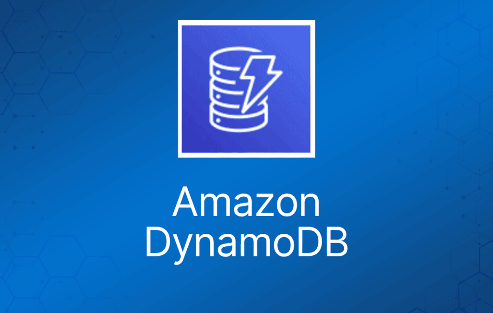
Amazon DynamoDB 是一项完全托管的 NoSQL 数据库服务，提供快速且可预测的性能以及无缝的可扩展性。
Amazon DynamoDB 为每个表存储三个地理分布的副本，以实现高可用性和数据持久性。
数据在一个区域内的 3 个设施（AZ）之间同步复制。
DynamoDB 是无 schema 的。
它是一种非关系型的键值（key-value）数据库。
DynamoDB 是无服务器服务——无需预置或管理任何实例。
一键扩展意味着你可以随时扩展数据库而不会产生停机时间。
DynamoDB 可用于存储会话状态（session state）数据。
提供极低的延迟。
数据存储在 SSD 存储上。
支持多 AZ 冗余和跨区域复制选项。
存储数据的底层硬件分布在 3 个地理位置不同的数据中心。
DynamoDB 由以下部分组成：
- 表（Table）。
- 项目（Item）。
- 属性（Attribute）。
表是项目的集合，项目由属性（列）组成。
属性由名称和一个值或一组值构成。
DynamoDB 中的属性类似于其他数据库系统中的字段或列。
一个项目的总大小不能超过 400KB，包括键和所有属性。
可以存储指向 S3 中对象的指针，包括超过 400KB 的项目。
支持键值和文档（document）结构。
键值数据库将数据存储为键值对的集合，其中键充当唯一标识符。
键（Key）= 数据的名称；值（Value）= 数据本身。
文档可以用 JSON、HTML 或 XML 编写。
Amazon DynamoDB 的一些功能和优势总结在下表中：
| DynamoDB 功能 | 优势 |
| 无服务器（Serverless） | 完全托管、容错的服务 |
| 高可用 | 99.99% 可用性 SLA——全局表（Global Table）为 99.999% |
| 采用名称/值结构的 NoSQL 数据库 | 灵活的 Schema，适合数据结构不清晰或不可预测的场景 |
| 水平扩展 | 通过一键扩展或 Auto Scaling 无缝扩展到任意规模 |
| DynamoDB Streams | 捕获 DynamoDB 表中项目级修改的按时间排序的序列，并将信息持久存储 24 小时。常与 Lambda 和 Kinesis Client Library (KCL) 配合使用。 |
| DynamoDB Accelerator (DAX) | 为 DynamoDB 提供完全托管的内存缓存，提升性能（微秒级延迟） |
| 事务选项 | 强一致性或最终一致性读取，支持 ACID 事务 |
| 备份 | 时间点恢复可精确到最近 35 天内的任意一秒；按需备份和恢复 |
| 全局表（Global Tables） | 完全托管的多区域、多主解决方案 |
反模式（Anti-Patterns）
Amazon DynamoDB 不适合以下情况：
- 传统的 RDS 应用。
- Join 和/或复杂事务。
- BLOB 数据。
- 低 I/O 速率的大数据量场景。
访问控制
所有身份验证和访问控制都使用 IAM 管理。
DynamoDB 支持 identity-based policy：
- 将权限策略附加到账户中的用户或组。
- 将权限策略附加到角色（授予跨账户权限）。
DynamoDB 不支持 resource-based policy。
你可以使用特殊的 IAM 条件来限制用户只能访问他们自己的记录。
在 DynamoDB 中，主要资源是表。
DynamoDB 还支持其他资源类型：索引和流。
你只能在现有 DynamoDB 表的上下文中创建索引和流（子资源）。
这些资源和子资源都有与之关联的唯一 Amazon Resource Name（ARN），如下表所示。
| 资源类型 | ARN 格式 |
| 表（Table） | arn:aws:dynamodb:region:account-id:table:table/name-name |
| 索引（Index） | arn:aws:dynamodb:region:account-id:table:table/name-name/index/index-name |
| 流（Stream） | arn:aws:dynamodb:region:account-id:table:table/name-name/stream/stream-label |
分区（Partitions）
Amazon DynamoDB 将数据存储在分区中。
分区是为表分配的存储空间，会在 AWS 区域内的多个 AZ 之间自动复制。
分区管理完全由 DynamoDB 处理——你永远不需要自己管理分区。
DynamoDB 为你的表分配足够的分区，使其能够处理你预置的吞吐量需求。
DynamoDB 会在以下情况下为表分配额外的分区：
- 如果你将表的预置吞吐量设置提高到超出现有分区所能支持的水平。
- 如果现有分区已满，需要更多存储空间。
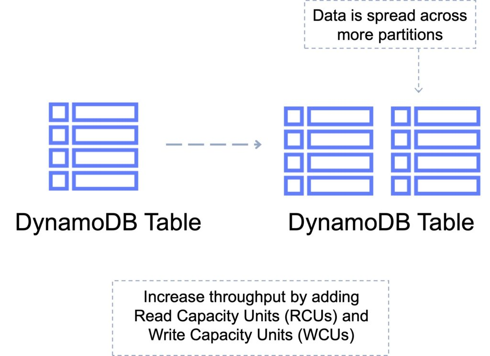
主键（Primary Keys）
DynamoDB 基于主键存储和检索数据。
主键有两种类型：
分区键（Partition key）—— 唯一属性（例如用户 ID）。
- 分区键的值会输入到内部哈希函数中，该函数决定数据存储的分区或物理位置。
- 如果使用分区键作为主键，则任意两个项目不能有相同的分区键。
下图展示了一张使用分区键的表：
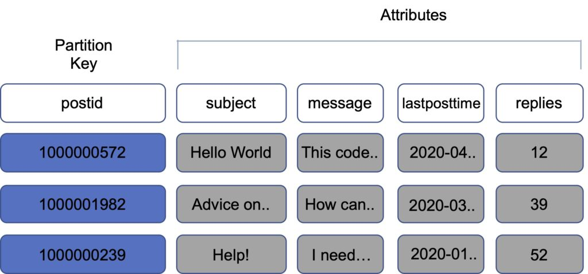
复合键（Composite key）—— 分区键 + 排序键（Sort key）的组合。
- 例如用户在论坛发帖。分区键是用户 ID，排序键是帖子的时间戳。
- 两个项目可以有相同的分区键，但它们必须有不同的排序键。
- 具有相同分区键的所有项目存储在一起，然后按排序键的值排序。
- 允许你使用相同的分区键存储多个项目。
下图展示了一张使用复合键的表：
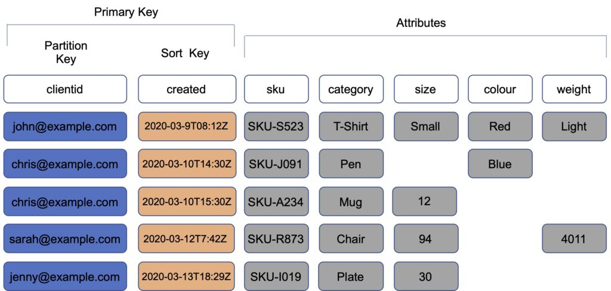
分区与性能
DynamoDB 将预置吞吐量——读容量单位（RCU）和写容量单位（WCU）——均匀分配到各个分区。
如果你的访问模式对单个分区键值超过 3000 RCU 或 1000 WCU，你的请求可能会被限流。
超出限制的读写可能由以下问题导致：
- 由于选择了错误的分区键导致数据分布不均。
- 频繁访问分区中的同一个键（最热门的项目，也称为热键 hot key）。
- 请求速率超过预置吞吐量。
分区键的最佳实践：
- 使用高基数（high-cardinality）属性——例如 e-mailid、employee_no、customerid、sessionid、orderid 等。
- 使用复合属性——例如以 customerid+productid+countrycode 作为分区键，以 order_date 作为排序键。
- 缓存热门项目——使用 DynamoDB Accelerator (DAX) 缓存读取。
- 对于写密集型用例，添加预定范围内的随机数字——例如为发票号添加随机后缀，如 INV00023-04593。
一致性模型（Consistency Models）
DynamoDB 支持最终一致性读取和强一致性读取。
最终一致性读取（Eventually consistent reads）：
- 从 DynamoDB 表读取数据时，响应可能不反映最近完成的写入操作的结果。
- 响应可能包含一些过期数据。
- 如果你在短时间后重复读取请求，响应应返回最新数据。
强一致性读取（Strongly consistent reads）：
- 当你请求强一致性读取时，DynamoDB 返回包含最新数据的响应，反映之前所有成功写入操作的更新。
- 如果存在网络延迟或中断，强一致性读取可能不可用。在这种情况下，DynamoDB 可能返回服务器错误（HTTP 500）。
- 强一致性读取的延迟可能高于最终一致性读取。
- 全局二级索引不支持强一致性读取。
- 强一致性读取比最终一致性读取消耗更多吞吐量容量。
DynamoDB 默认使用最终一致性读取。
你可以在 GetItem、Query 和 Scan API 中通过将 --consistent-read（或 ConsistentRead）参数设置为 "true" 来配置强一致性读取。
DynamoDB 事务（Transactions）
Amazon DynamoDB 事务简化了开发者对表内和跨表多个项目进行协调的、全有或全无（all-or-nothing）更改的体验。
事务在 DynamoDB 中提供原子性、一致性、隔离性和持久性（ACID）。
支持将跨多个表的多个项目的读写作为一个全有或全无的操作。
在写入表之前检查前提条件。
使用事务写入 API，你可以将多个 Put、Update、Delete 和 ConditionCheck 操作分组。
然后你可以将这些操作作为单个 TransactWriteItems 操作提交，该操作作为一个整体成功或失败。
多个 Get 操作也是如此，你可以将它们分组并作为单个 TransactGetItems 操作提交。
为 DynamoDB 表启用事务不收取额外费用。
你只需为事务中包含的读取或写入付费。
DynamoDB 对事务中的每个项目执行两次底层读取或写入：一次用于准备事务，一次用于提交事务。
这两次底层读/写操作在你的 Amazon CloudWatch 指标中可见。
下图展示了使用 DynamoDB 事务的失败写入：
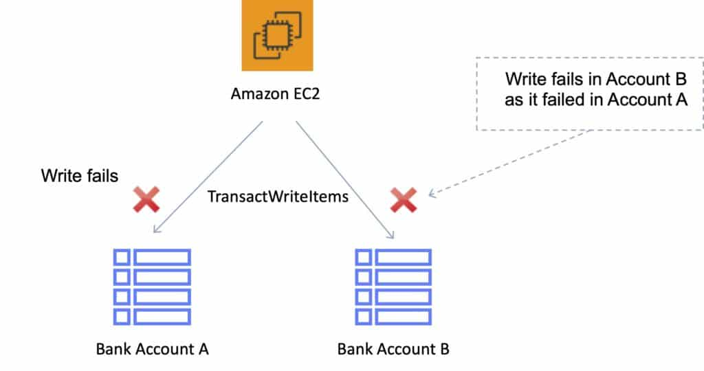
下图展示了使用 DynamoDB 事务的成功写入：
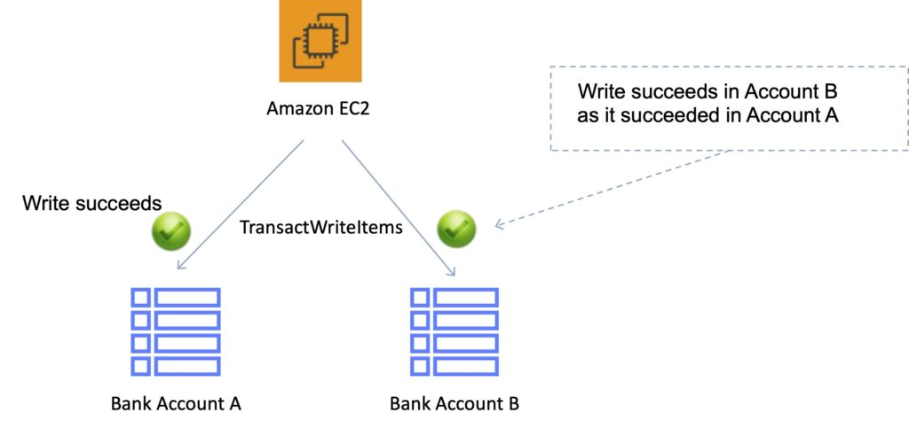
Scan 和 Query API 调用
Scan
Scan 操作通过访问表或二级索引中的每个项目来返回一个或多个项目及其属性。
单次 Scan 操作最多读取设定数量的项目（如果使用 Limit 参数），或最多 1 MB 数据。
Scan API 调用可能消耗大量 RCU，因为它们访问表中的每个项目。
你可以使用 ProjectionExpression 参数，让 Scan 只返回部分属性，而不是全部属性。
如果需要进一步筛选 Scan 结果，你可以选择性地提供筛选表达式（filter expression）。
筛选表达式在 Scan 完成后、结果返回之前应用。
Scan 操作按顺序进行。
为了在大型表或二级索引上获得更快的性能，应用可以通过提供 Segment 和 TotalSegments 参数来请求并行 Scan 操作。
Scan 访问表中数据时使用最终一致性读取。
如果需要 Scan 开始时数据的一致性副本，可以将 ConsistentRead 参数设置为 true。
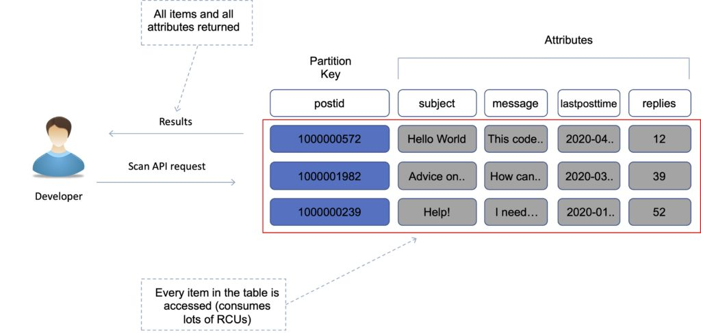
Query
Query 操作基于主键属性和要搜索的具体值在表中查找项目。
例如，你可以搜索某个用户 ID 值，与该项目相关的所有属性都会被返回。
你可以使用可选的排序键名称和值来细化结果。
例如，如果你的排序键是时间戳，你可以细化查询以仅选择最近 7 天的项目。
默认情况下，查询返回项目的所有属性，但如果你只想返回想看的属性，可以使用 ProjectionExpression 参数。
结果始终按排序键排序。
使用数字顺序——默认升序（例如 1,2,3,4）。
使用 ASCII 字符码值。
你可以通过将 ScanIndexForward 参数（没错，它用于 query 而非 scan）设置为 false 来反转顺序。
默认情况下，查询是最终一致性的。
要使用强一致性，需要在查询中显式设置。
下图展示了使用投影表达式限制返回属性的 query API 调用：
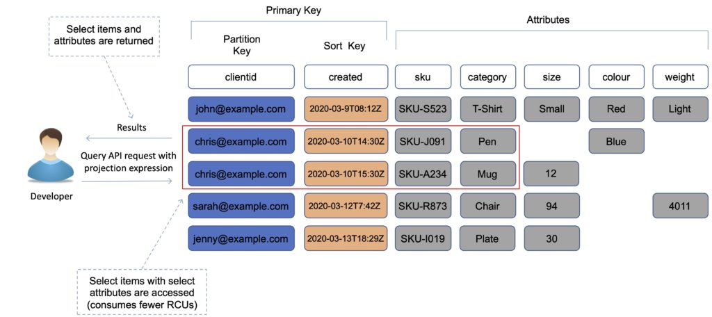
Scan 与 Query 对比
Query 比 Scan 更高效。
Scan 会读取整个表，然后过滤出提供所需结果的值（移除不需要的数据）。
这增加了一个移除不需要数据的额外步骤。
随着表的增长，scan 操作耗时更长。
对大型表执行一次 Scan 操作可能在单个操作中耗尽该表的预置吞吐量。
性能优化
你可以通过设置较小的页面大小来减少 query 或 scan 的影响，这会使用更少的读取操作。
大量较小的操作将允许其他请求成功执行而不被限流。
尽可能避免使用 scan 操作：以可以使用 Query、Get 或 BatchGetItem API 的方式设计表。
Scan 性能优化：
- 默认情况下，scan 操作按顺序处理数据，每次返回 1MB 数据后再继续检索下一个 1MB。它一次只能扫描一个分区。
- 你可以配置 DynamoDB 改用并行扫描，将表或索引在逻辑上划分为多个段（segment）并并行扫描每个段。
注意：如果你的表或索引已经在承受来自其他应用的大量读/写活动，最好避免并行扫描。
索引（Indexes）
索引是一种数据结构，允许你对表中的特定列执行快速查询。
你选择要包含在索引中的列，然后在索引上运行搜索，而不是在整个数据集上搜索。
DynamoDB 支持两种用于加速查询的索引类型：
- 本地二级索引（Local Secondary Index）。
- 全局二级索引（Global Secondary Index）。
本地二级索引（LSI）
LSI 提供备用的排序键，用于 scan 和 query。
它为表提供一个备用的范围键，与哈希键位于本地。
每张表最多可以有五个 LSI。
排序键由恰好一个标量属性组成。
你选择的属性必须是标量的 String、Number 或 Binary 类型。
LSI 必须在创建表时创建。
它只能在创建表时创建。
之后无法添加、删除或修改它。
它与原表具有相同的分区键（但排序键不同）。
它让你以备用排序键组织的不同视角查看数据。
使用索引基于该排序键的任何查询都比在主表上快得多。
一个例子是以用户 ID 作为分区键，以账户创建日期作为排序键。
LSI 的主要好处是你可以查询表中除分区键/排序键之外的其他值。
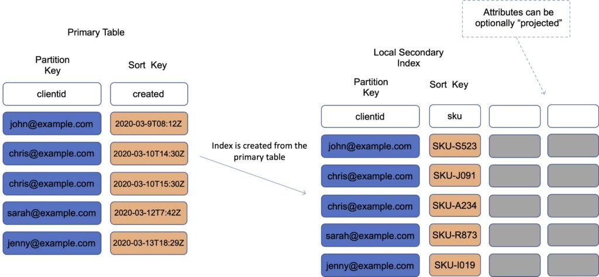
全局二级索引（GSI）
GSI 用于加速对非键属性的查询。
你可以在创建表时或之后的任何时间创建。
GSI 具有不同的分区键和不同的排序键。
它提供完全不同的数据视角。
它加速与这个备用分区键和排序键相关的任何查询。
一个例子是以电子邮件地址作为分区键，以最后登录日期作为排序键。
使用 GSI 时，索引是一张新的"表"，你可以将属性投影（project）到它上面。
- 原表的分区键和排序键始终被投影（KEYS_ONLY）。
- 可以指定要投影的额外属性（INCLUDE）。
- 可以使用主表的所有属性（ALL）。
你必须为索引定义 RCU / WCU。
可以随时添加/修改 GSI。
如果 GSI 上的写入被限流，主表也会被限流（即使主表有足够的 WCU）。LSI 不会引起任何特殊的限流问题。
考试提示：通常需要确保 GSI 上指定的 RCU/WCU 至少与主表相同或更多，以避免主表被限流。
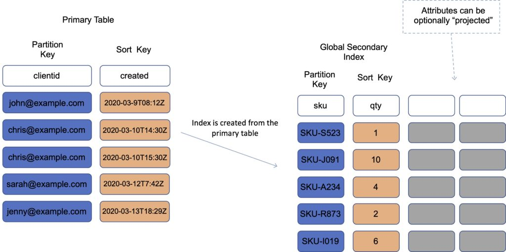
性能与优化
DynamoDB 预置容量（Provisioned Capacity）
使用预置容量模式时，你指定应用所需的每秒数据读取和写入次数。
你可以使用 Auto Scaling 根据指定的利用率自动调整表的容量，在保证应用性能的同时降低成本。
创建表时，你使用读容量单位（RCU）和写容量单位（WCU）指定需求。
注意：WCU 和 RCU 在各分区之间均匀分配。
你还可以在预置容量模式下使用 Auto Scaling。
DynamoDB Auto Scaling 使用 AWS Application Auto Scaling 服务，代表你根据流量模式动态调整预置吞吐量容量。
这使表或全局二级索引能够增加其预置读写容量以应对流量的突然增长，而不会被限流。
读容量单位（RCU）：
- 每次从表读取数据的 API 调用都是一个读取请求。
- 读取请求可以是强一致的、最终一致的或事务性的。
- 对于最大 4 KB 的项目，一个 RCU 每秒可执行一次强一致性读取请求。
- 大于 4 KB 的项目需要额外的 RCU。
- 对于最大 4 KB 的项目，一个 RCU 每秒可执行两次最终一致性读取请求。
- 事务性读取请求对于最大 4 KB 的项目，每秒执行一次读取需要两个 RCU。
- 例如，对 8 KB 项目的强一致性读取需要两个 RCU，对 8 KB 项目的最终一致性读取需要一个 RCU，对 8 KB 项目的事务性读取需要四个 RCU。
写容量单位（WCU）：
- 每次向表写入数据的 API 调用都是一个写入请求。
- 对于最大 1 KB 的项目，一个 WCU 每秒可执行一次标准写入请求。
- 大于 1 KB 的项目需要额外的 WCU。
- 事务性写入请求对于最大 1 KB 的项目，每秒执行一次写入需要两个 WCU。
- 例如，对 1 KB 项目的标准写入请求需要一个 WCU，对 3 KB 项目的标准写入请求需要三个 WCU，对 3 KB 项目的事务性写入请求需要六个 WCU。
复制写容量单位（rWCU）：
- 使用 DynamoDB 全局表时，你的数据会自动写入你选择的多个 AWS 区域。
- 每次写入都发生在本地区域以及复制区域中。
流读取请求单位（Streams read request unit）：
- 对 DynamoDB Streams 的每次 GetRecords API 调用都是一个流读取请求单位。
- 每个流读取请求单位最多可返回 1 MB 数据。
事务性读/写请求：
- 在 DynamoDB 中，事务性读取或写入与标准读取或写入的不同之处在于，它保证单个事务集中包含的所有操作作为一个整体成功或失败。
DynamoDB 按需容量（On-Demand Capacity）
使用按需模式时，你无需指定需求。
DynamoDB 根据应用的活动即时扩缩容。
非常适合不可预测/突发的工作负载，或尚未充分了解的新工作负载。
按实际使用量付费（按请求付费）。
你可以在预置容量和按需定价模式之间切换，每天一次。
性能与限流（Throttling）
当超过配置的 RCU 或 WCU 时会发生限流。
可能会收到 ProvisionedThroughputExceededException 错误。
此错误表明你的请求速率对于为该表预置的读/写容量来说过高。
DynamoDB 的 AWS SDK 会自动重试收到此异常的请求。
你的请求最终会成功，除非重试队列太大而无法完成。
性能问题的可能原因：
- 热键（Hot key）—— 某个分区键被读取过于频繁。
- 热分区（Hot partition）—— 当数据访问不均衡时，某个"热"分区相比其他分区会收到更高的读写流量。
- 大项目 —— 大项目消耗更多 RCU 和 WCU。
解决方法：
- 降低请求频率并使用指数退避（exponential backoff）。
- 尽量将应用设计为在表及其二级索引的所有逻辑分区键上活动均匀分布。
- 有效利用突发容量（burst capacity）—— DynamoDB 目前保留最多 5 分钟（300 秒）的未使用读写容量，可以快速使用。
DynamoDB Accelerator (DAX)
Amazon DynamoDB Accelerator (DAX) 是为 DynamoDB 提供的完全托管、高可用的内存缓存，可提供高达 10 倍的性能提升。
将性能从毫秒级提升到微秒级，即使每秒数百万个请求也是如此。
DAX 是一项托管服务，为 DynamoDB 表提供内存加速。
提供托管的缓存失效、数据填充和集群管理。
DAX 用于提升读取性能（而非写入）。
你无需修改应用逻辑，因为 DAX 与现有的 DynamoDB API 调用兼容。
非常适合读密集型和突发型工作负载，例如拍卖应用、游戏，以及进行特价销售/促销活动的零售网站。
你只需在 AWS 管理控制台中点击几下或使用 AWS SDK 即可启用 DAX。
与 DynamoDB 一样，你只需为预置的容量付费。
通过集群预置，按节点收费（运行在 EC2 实例上）。
定价按消耗的节点小时计算，取决于你选择的实例类型。
工作原理：
- DAX 是写穿（write-through）缓存服务——这意味着数据会同时写入缓存和后端存储。
- 允许你将 DynamoDB API 调用指向 DAX 集群，如果项目在缓存中（缓存命中），DAX 会将结果返回给应用。
- 如果请求的项目不在缓存中（缓存未命中），DAX 会对 DynamoDB 执行最终一致性 GetItem 操作。
- 从 DAX 检索数据可减少 DynamoDB 表的读取负载。
- 这可能使你可以减少表的预置读取容量。
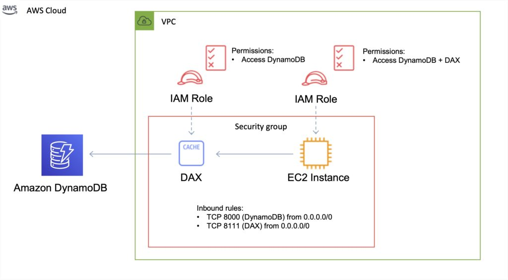
DAX 与 ElastiCache 对比
DAX 针对 DynamoDB 进行了优化。
DAX 不支持惰性加载（lazy loading），使用写穿缓存。
使用 ElastiCache 你有更多管理开销（例如缓存失效）。
使用 ElastiCache 你需要修改应用代码以指向缓存。
ElastiCache 支持更多数据存储。
DynamoDB 生存时间（TTL）
在过期日期/时间之后自动删除项目。
过期项目会被标记为待删除。
非常适合移除不相关或过期的数据，例如：
- 会话数据。
- 事件日志。
- 临时数据。
无额外费用，不消耗 WCU / RCU。
TTL 是由 DynamoDB 操作的后台任务。
TTL 有助于减少存储并随时间管理表大小。
TTL 按行启用（你定义一个 TTL 列并在其中添加过期日期/时间）。
DynamoDB 通常在过期后 48 小时内删除过期项目。
被删除的项目也会从 LSI / GSI 中删除。
DynamoDB Streams 可以帮助恢复过期的项目。
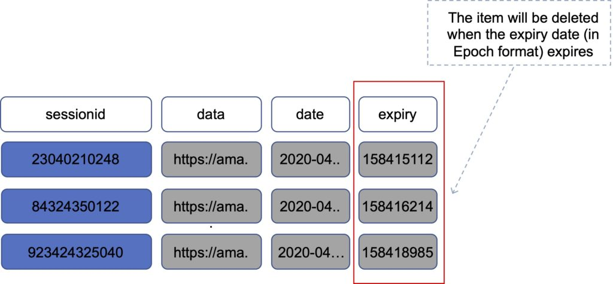
指数退避（Exponential backoff）
网络中的许多组件在过载时会产生错误。
除了简单重试外，所有 AWS SDK 都使用指数退避。
重试之间的等待时间会逐渐变长，以改善流量控制。
如果 1 分钟后仍然不成功，你的请求大小可能超过了读/写容量的吞吐量。
如果你的工作负载以读取为主，考虑使用 DAX 或 ElastiCache 进行卸载。
如果你的工作负载以写入为主，考虑增加表的 WCU。
DynamoDB Streams
DynamoDB Streams 捕获任何 DynamoDB 表中项目级修改的按时间排序的序列，并将此信息在日志中存储最多 24 小时。
应用可以访问此日志，近乎实时地查看数据项目在修改前后的样子。
你也可以使用 CreateTable 或 UpdateTable API 操作来启用或修改流。
日志静态加密，存储 24 小时。
通过专用端点访问。
默认情况下，仅记录主键。
可以捕获修改前后的镜像（image）。
事件近乎实时地记录。
应用可以根据内容采取行动。
流可以作为 Lambda 的事件源。
Lambda 轮询 DynamoDB 流，并基于 DynamoDB Streams 事件执行代码。
数据在流中仅存储 24 小时。
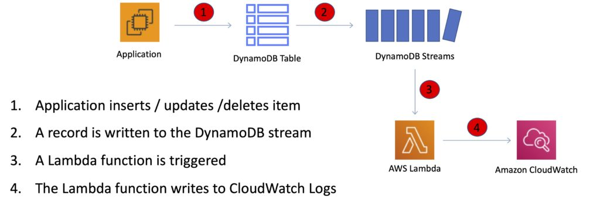
StreamSpecification 参数决定流的配置方式：
StreamEnabled —— 指定是否为表启用流（true）或禁用（false）。
StreamViewType —— 指定每当表中数据被修改时将写入流的信息：
- KEYS_ONLY —— 仅被修改项目的键属性。
- NEW_IMAGE —— 修改后的整个项目。
- OLD_IMAGE —— 修改前的整个项目。
- NEW_AND_OLD_IMAGES —— 项目的新旧镜像都包含。
API 调用
写入数据
- PutItem —— 创建数据或完全替换（消耗 WCU）。
- UpdateItem —— 更新数据，部分更新属性（可使用原子计数器 atomic counter）。
- 条件写入（Conditional writes）—— 仅在满足条件时才接受写入/更新。
- DeleteItem —— 删除单个行（可执行条件删除）。
- DeleteTable —— 删除整个表（比对所有项目使用 DeleteItem 更快）。
- BatchWriteItem —— 一次调用最多可 put 或 delete 25 个项目（最大 16MB 写入 / 每个项目 400KB）。
批处理通过减少 API 调用次数来降低延迟。
操作并行执行以提高效率。
读取数据
- GetItem —— 基于主键读取（默认最终一致性，可请求强一致性读取）。可指定投影表达式以仅包含特定属性。
- BatchGetItem —— 最多 100 个项目，每个项目最大 16MB。项目并行检索以最大限度减少延迟。
- Query —— 基于 PartitionKey 值以及可选的排序键返回项目。可使用 FilterExpression 进行过滤。最多返回 1MB 数据或 Limit 中指定的项目数。可对结果分页。可查询表、本地二级索引或全局二级索引。
- Scan —— 扫描整个表（低效）。最多返回 1MB 数据——使用分页查看更多结果。消耗大量 RCU。可使用 ProjectionExpression + FilterExpression。
乐观锁（Optimistic Locking）
乐观锁是一种策略，确保你正在更新（或删除）的客户端项目与 Amazon DynamoDB 中的项目一致。
保护数据库写入不被他人的写入覆盖，反之亦然。
条件更新（Conditional Updates）
要操作 Amazon DynamoDB 表中的数据，你使用 PutItem、UpdateItem 和 DeleteItem 操作。
你可以选择性地指定条件表达式来确定应修改哪些项目。
如果条件表达式的计算结果为 true，则操作成功；否则操作失败。
安全性
DynamoDB 支持 VPC 端点（VPC endpoint）。
可以使用 AWS KMS 启用静态加密。
传输中加密使用 SSL / TLS。
最佳实践
保持项目大小较小。
如果你在 DynamoDB 中存储需要基于日期/时间执行操作的序列化数据，请按天、周、月使用不同的表。
将访问频率较高和较低的数据存储在不同的表中。
如果可能，压缩较大的属性值。
将大于 400KB 的对象存储在 S3 中，并在 DynamoDB 中使用指针（S3 Object ID）。
集成
ElastiCache 可用于 DynamoDB 前端，以提升对不经常变化数据的读取性能。
触发器与 AWS Lambda 集成以响应触发。
与 RedShift 的集成：
- RedShift 以高级商业智能能力补充 DynamoDB。
- 将数据从 DynamoDB 表复制到 RedShift 后，你可以执行复杂的数据分析查询，包括与其他表的 join。
- 从 DynamoDB 表复制数据的操作会占用该表的读取容量。
- 数据复制完成后，SQL 查询不会影响 DynamoDB 中的数据。
DynamoDB 与 EMR 上的 Apache Hive 集成。Hive 让你能够：
- 读写 DynamoDB 表中的数据，允许你使用类 SQL 语言（HiveQL）查询 DynamoDB 数据。
- 将数据从 DynamoDB 表复制到 S3 bucket，反之亦然。
- 将数据从 DynamoDB 表复制到 HDFS，反之亦然。
- 对 DynamoDB 表执行 join 操作。
可扩展性
一键扩展，无停机时间。
每个自然日只能缩减 4 次。
AWS 对你可以预置的吞吐量设置了默认限制。
DynamoDB 会对超过表预置吞吐量的请求进行限流。
DynamoDB 还会对索引的读取请求进行限流，以防止应用消耗过多容量单位。
当请求被限流时，会失败并返回 HTTP 400 状态码（Bad Request）和 ProvisionedThroughputExceeded 异常。
使用全局表（Global Tables）进行跨区域复制
Amazon DynamoDB 全局表为部署多区域、多主数据库提供完全托管的解决方案。
创建全局表时，你指定希望表可用的 AWS 区域。
DynamoDB 执行所有必要的任务，在这些区域创建相同的表，并将持续的数据更改传播到所有区域。
DynamoDB 全局表非常适合拥有全球分散用户的大规模应用。
全局表提供到全球 AWS 区域的自动多主复制，因此无论用户位于何处，你都可以为他们提供低延迟的数据访问。
定义：
- 全局表（global table）是一个或多个副本表的集合，全部由单个 AWS 账户拥有。
- 副本表（replica table，简称副本）是作为全局表一部分的单个 DynamoDB 表。每个副本存储相同的数据项集合。任何给定的全局表每个区域只能有一个副本表。
下图展示了 Amazon DynamoDB 全局表的拓扑结构：
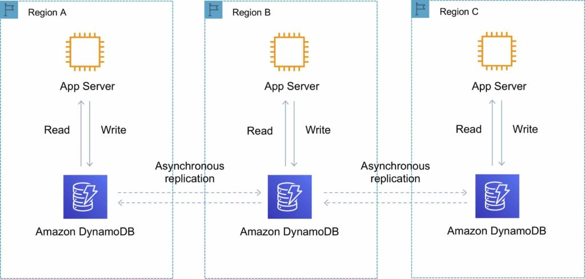
你可以向全局表添加副本表，使其在更多 AWS 区域可用。
使用全局表时，每个副本表存储相同的数据项集合。DynamoDB 不支持仅复制部分项目的部分复制。
应用可以对任何副本表读写数据。如果你的应用只使用最终一致性读取，并且只对一个 AWS 区域发起读取，那么它无需任何修改即可工作。
但是，如果你的应用需要强一致性读取，那么它必须在同一区域执行所有强一致性读取和写入。DynamoDB 不支持跨 AWS 区域的强一致性读取。
重要的是，全局表中的每个副本表和二级索引具有相同的写入容量设置，以确保数据正确复制。
DynamoDB Auto Scaling
DynamoDB Auto Scaling 使用 AWS Application Auto Scaling 服务，代表你根据实际流量模式动态调整预置吞吐量容量。
这使表或全局二级索引能够增加其预置读写容量以应对流量的突然增长，而不会被限流。
当工作负载减少时，Application Auto Scaling 会降低吞吐量，这样你就不必为未使用的预置容量付费。
Application Auto Scaling 的工作方式：
- 你为表或全局二级索引创建扩展策略（scaling policy）。
- 扩展策略指定你要扩展读取容量还是写入容量（或两者），以及表或索引的最小和最大预置容量单位设置。
- 扩展策略还包含目标利用率（target utilization）——某一时间点消耗的预置吞吐量百分比。
- 使用目标跟踪（target tracking）算法，根据实际工作负载向上或向下调整表（或索引）的预置吞吐量，使实际容量利用率保持在目标利用率附近。
目前，如果表的消耗容量变为零，Auto Scaling 不会缩减你的预置容量。
如果使用 AWS 管理控制台创建表或全局二级索引，DynamoDB Auto Scaling 默认启用。
数据库的高可用方案
如果可能，优先选择 DynamoDB 而非 RDS，因为它具有内在的容错能力。
如果不能使用 DynamoDB，选择 Aurora，因为它具备冗余和自动恢复功能。
如果不能使用 Aurora，选择多 AZ RDS。
频繁的 RDS 快照可以防止数据损坏或故障，且不会影响多 AZ 部署的性能。
区域复制也是一种选择，但不是强一致性的。
如果数据库运行在 EC2 上，你必须自己设计高可用方案。